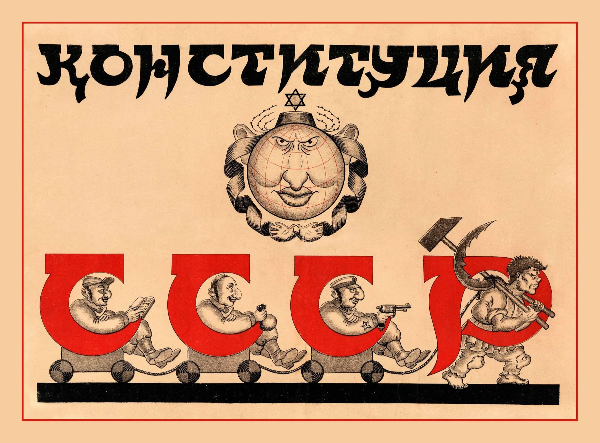

Genealogy
Trace antizionism’s Soviet, post-colonial, nationalist, and institutional lineages.
Understanding antizionism as a narrative system, an ideological lineage, and an institutional force.
STOPAZ connects historical scholarship with practical analysis so leaders can identify how antizionist narratives are constructed, circulated, and normalized.
Trace antizionism’s Soviet, post-colonial, nationalist, and institutional lineages.
Examine villain, victim, and rescuer roles; moral inversions; libels; and ideological conditioning.
Study how the framework enters education, media, culture, professional life, and civic institutions.
Translate research into language, standards, and tools that institutions can use.

“Teach people to decode antizionism as a narrative system, not a political debate.”
Analysis supports curriculum, institutional training, public communication, leadership advisement, and crisis response.